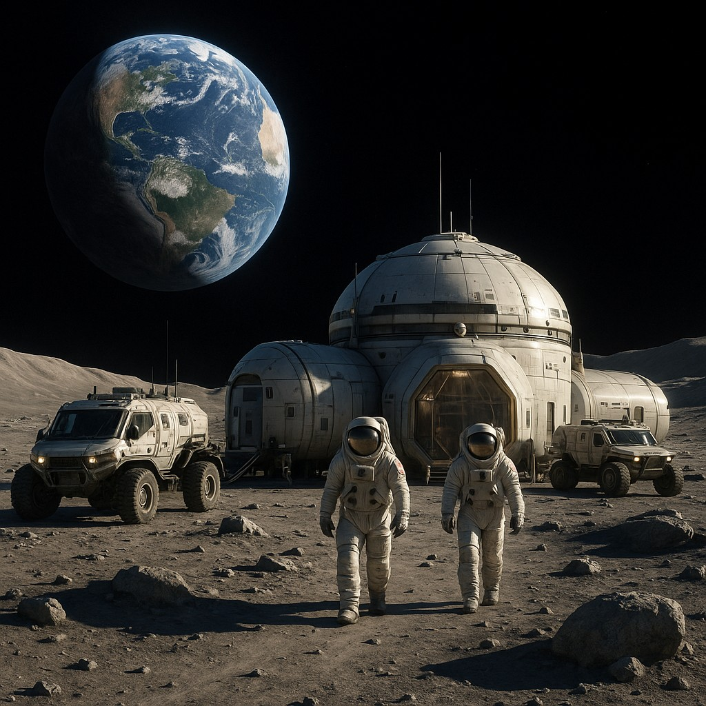
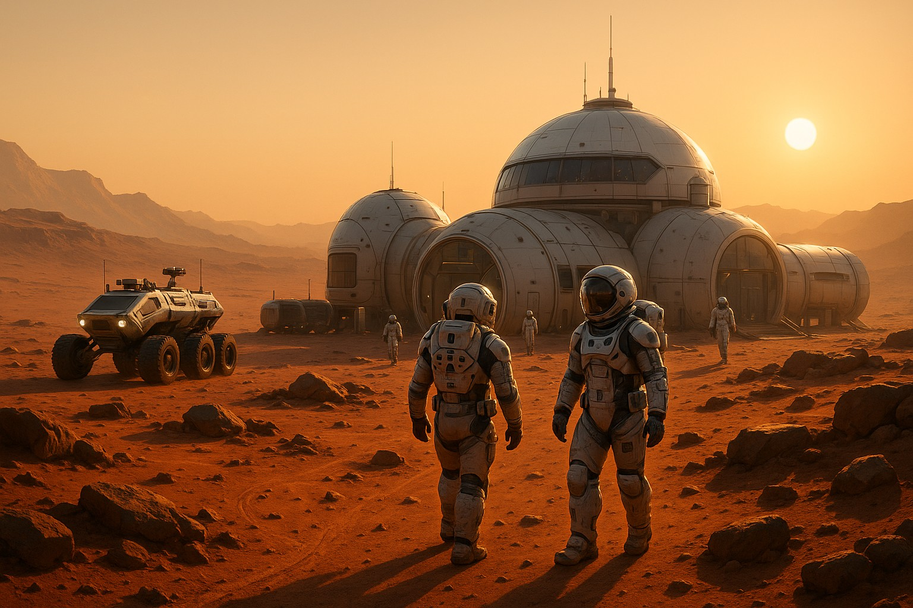
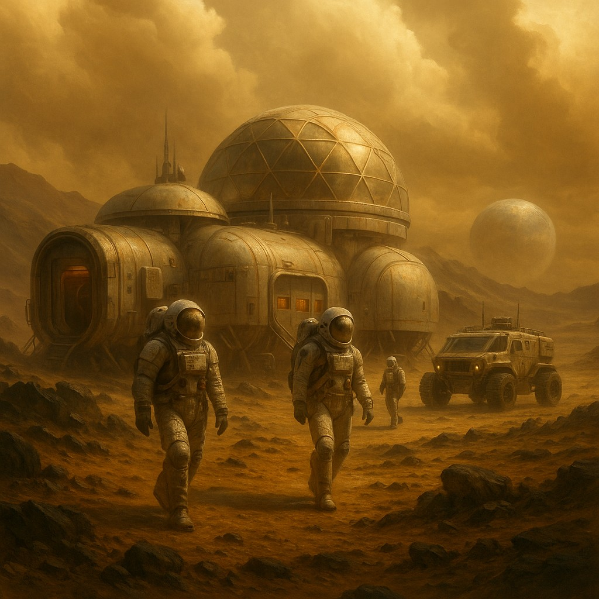

Hold-felfedező
Élj át egy izgalmas kalandot a titokzatos Holdon. Egy modern kutatóbázisból csodálhatod, ahogy a Föld
lélegzetelállító gömbje lebeg a fekete égbolton.
Tapasztalt holdjáró-pilóták mutatják meg a csendes, szürke vidéket, megtanítanak kezelni a
járműveket, és eljuttatnak a legizgalmasabb kráterekhez,
ahol lélegzetelállító panorámaképeket
készíthetsz.
A nap végén a bázis kupolájában berendezett előadóteremben neves asztronauták és kutatók mesélnek
az
űrkutatás legújabb eredményeiről.
A bázis minden igényt kielégítő ellátást biztosít, és valós idejű videó-kapcsolatot tart fenn a
Földdel.
Ez nem pusztán egy kis lépés az embernek, hanem egy ugrás az egész emberiségnek.
Csatlakozz hozzánk, és légy te is holdi felfedező!
A Vörös Bolygó titkai
Képzeld el, ahogy egy biztonságos kutatóbázisból láthatod a „Vörös Bolygót”. Tapasztalt „marsjárók”
vezetnek be az idegen környezetbe,
megtanítanak kezelni a járműveket, és elvisznek a legjobb helyszínekhez, ahol különleges képeket
készíthetsz a napfelkeltéről és a napnyugtáról,
Minden nap egy új felfedezés: geokémiai mintavétel, hangtani kísérletek, de még életnyomok keresése is
van a programban.
Esténként, a kupolában berendezett előadóteremben szakértők mesélnek a vörös bolygó titkairól.
A bázis teljes körű ellátást nyújt és élő videókapcsolatot a Földdel, hogy szeretteid mindig közel
érezhessék magukat hozzád.
Ez az expedíció nem csak utazás, hanem egy életre szóló élmény: a Mars távoli horizontjának felfedezése,
egy lépés az emberiség jövője felé.
Csatlakozz hozzánk, és válj te is marsi felfedezővé!
Aurelia Venus Küldetés
Képzeld el, hogy belépsz egy zárt, felhőkék kupolába, mely a Vénusz sűrű, savas légkörének védelmében
áll,
miközben a kinti nap aranyló fénye átszűrődik a kémiai szűrőkön.
A Vénusz a Nap második kísérője, Földünk „testvére”, ám felszíni hőmérséklete eléri a 460 °C-ot,
és a légkör nyomása majdnem százszorosa a földinek – igazi extrém környezet a bátor felfedezőknek.
Két „felhőjáró” roverrel indulunk felfedezni a vastag savködön átszűrődő horizontot, közben szakértőink
vezetnek be a geokémiai
és atmoszferikus mintavétel rejtelmeibe. Megtanulod kezelni a nagynyomású járműveket, s közben
megcsodálhatod a hatalmas corona-krátereket és a vulkáni síkságok ellipszisét.
Esténként a bázis kupolájában összeülünk: légköri hologramokon szemléltetjük a Vénusz bolygófészkét, és
megtudhatod, hogyan csapódik vissza a hősugárzás a vastag CO₂-felhőkben.
Ez az expedíció nem pusztán utazás, hanem egy életre szóló kihívás: a naprendszer legkegyetlenebb, mégis
legvonzóbb környezetének megismerése.
Csatlakozz hozzánk, és írd be a neved az emberiség nagy vénuszi felfedezői közé!